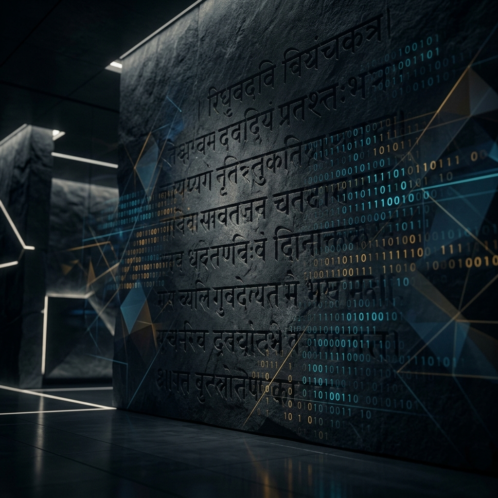
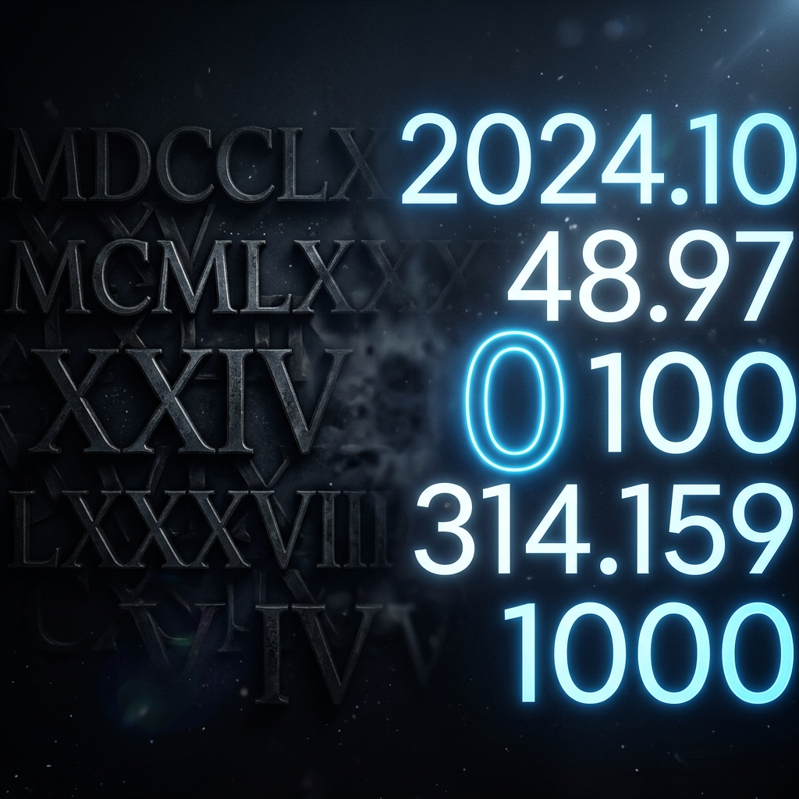
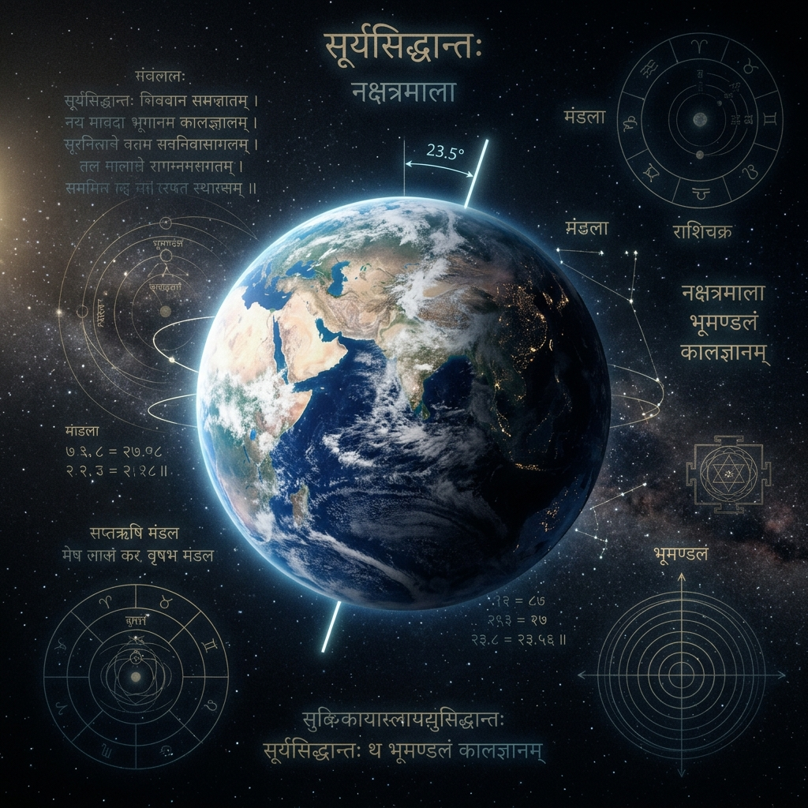
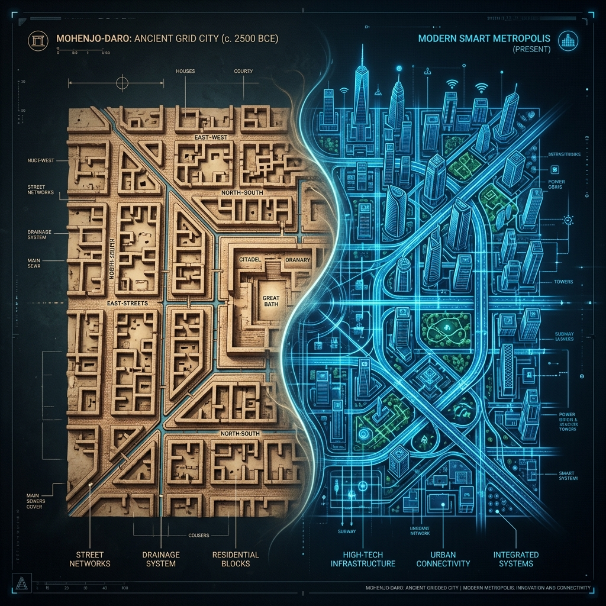
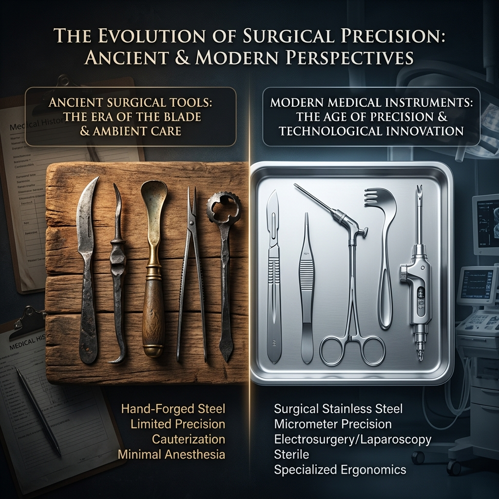
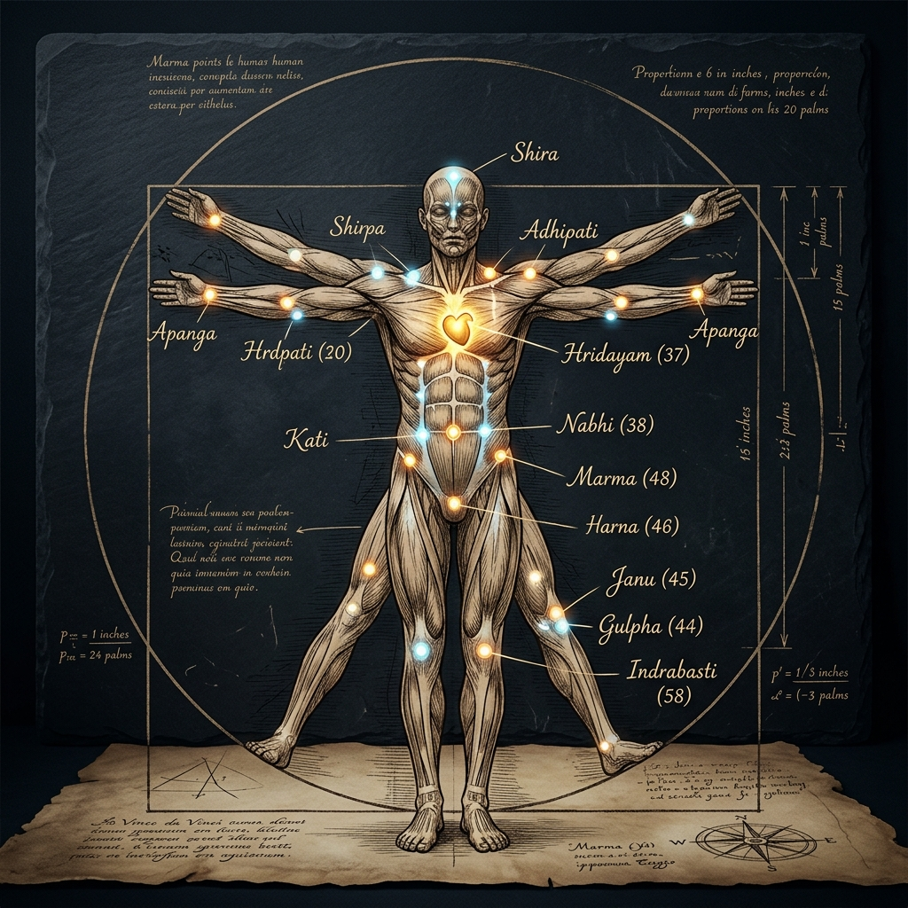

Mathematics, Astronomy, Engineering, and Physiology
The Foundations of Modern Science
Exploring the profound legacy of ancient Indian contributions.


Mathematics
The Power of Zero
The decimal system and the concept of zero as an actual value originated in India.
Brahmagupta (628 CE) was the first to write the rules for how zero behaves (addition, multiplication, placeholders).
He also introduced rules for negative numbers, framing them exactly as "debts."
Poetry, Binary, and Algorithms
Pingala's Binary
Pingala developed an early binary system (long/short beats = 1/0) while studying the precise rhythm of Sanskrit poetry.
Modern Computing
This exact two-state system is the conceptual architecture and foundation that modern computing runs on today.
The Algorithm
The word "algorithm" traces directly back to Al-Khwarizmi (9th century), who documented and translated Indian mathematical methods.
Astronomy
Khagol Shastra: Observing the Cosmos
- I. Aryabhata (499 CE) calculated the solar year at 365.358 days without telescopes or satellites.
- II. He correctly stated that the Earth rotates on its own axis, causing the illusion of a moving sun.
- III. He calculated the Earth's circumference (approx. 39,968 km) with an astonishing error margin of just 0.3%.

Astronomy
Modeling Planetary Motion
The Surya Siddhanta accurately modeled the solar system and seamlessly predicted eclipses.
Indian astronomers built immense, complex instruments (Yantras) to measure celestial angles.
The Jantar Mantar in Jaipur (built 1700s) remains phenomenally accurate to within seconds today.
Astronomy was highly practical—deeply used for agriculture, medicine, and precise calendars.

Engineering
Building the Ancient World
Mohenjo-Daro (2500 BCE)
Featured strict grid-based streets flawlessly aligned perfectly to the north-south and east-west axes.
The Golden Standard
Bricks used a standardized 1:2:4 ratio, the exact same fundamental ratio used in modern construction for stability.
Sanitation Network
The city featured a fully functioning underground sanitation sewer system—4,000 years before London built theirs.
Engineering
Materials Science & Metallurgy
- The Iron Pillar in Delhi has stood completely exposed for 1,600 years with almost no rust due to advanced phosphorus manipulation.
- India was the first civilization to produce zinc by distillation (Zawar mines, Rajasthan, 9th century).
- European metallurgists only succeeded in zinc distillation centuries later by directly adopting the Indian method.

Physiology
Sushruta & Human Anatomy
Sushruta (600 BCE) accurately mapped human anatomy, internal muscle structure, and organs long before modern dissection existed.
He ingeniously used natural decomposition in slow-flowing rivers to study anatomical layers without violating strict ritual impurity laws.
The Sushruta Samhita precisely categorizes 125 specific surgical instruments including scalpels, forceps, and catheters.

Physiology
Reconstructive Surgery & Marma
Rhinoplasty
Sushruta performed successful nose reconstruction using forehead skin flaps and reed stents for airways—the very foundation of modern plastic surgery.
107 Nodes
He carefully mapped 107 Marma points—vital intersections of nerves, bones, and vessels.
Lethal Precision
Modern trauma fatalities align incredibly heavily with his specific 19 "instant-death" Marma points.
Martial Arts
This exact medical knowledge simultaneously informed and birthed Kalaripayattu martial arts.
Ancient systems like Dinacharya (Ayurvedic routine) and Nadi Pariksha (pulse diagnosis) prioritized deep self-knowledge over external tracking.
We have seemingly traded intuitive self-knowledge for smartwatches and external data.
"The universe is inside you.
Look inside and see."
End of Presentation